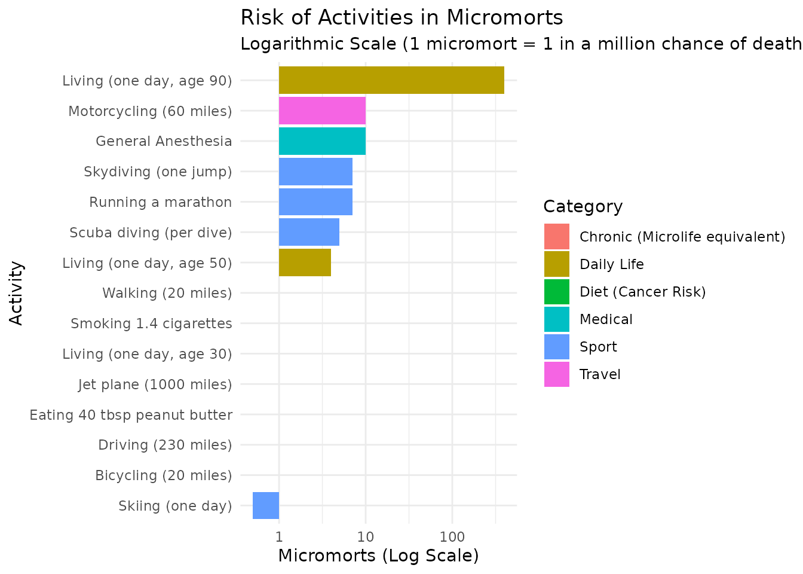

vignettes/introduction.Rmd
introduction.Rmd
library(micromort)
library(ggplot2)
library(dplyr)
#>
#> Attaching package: 'dplyr'
#> The following objects are masked from 'package:stats':
#>
#> filter, lag
#> The following objects are masked from 'package:base':
#>
#> intersect, setdiff, setequal, unionThis vignette introduces the micromort package, which provides tools for understanding and visualizing risks.
A micromort is a unit of risk representing a one-in-a-million chance of death. It is used to measure acute risks—risks that can kill you immediately (e.g., skydiving, driving).
# 1 in 10,000 chance of death = 100 micromorts
prob <- 1/10000
as_micromort(prob)
#> [1] 100
# Compare common risks
risks <- common_risks()
print(risks)
#> # A tibble: 15 × 3
#> activity risk_micromorts category
#> <chr> <dbl> <chr>
#> 1 Skydiving (one jump) 7 Sport
#> 2 Running a marathon 7 Sport
#> 3 Scuba diving (per dive) 5 Sport
#> 4 Skiing (one day) 0.5 Sport
#> 5 Motorcycling (60 miles) 10 Travel
#> 6 Walking (20 miles) 1 Travel
#> 7 Bicycling (20 miles) 1 Travel
#> 8 Driving (230 miles) 1 Travel
#> 9 Jet plane (1000 miles) 1 Travel
#> 10 General Anesthesia 10 Medical
#> 11 Living (one day, age 30) 1 Daily Life
#> 12 Living (one day, age 50) 4 Daily Life
#> 13 Living (one day, age 90) 400 Daily Life
#> 14 Eating 40 tbsp peanut butter 1 Diet (Cancer Risk)
#> 15 Smoking 1.4 cigarettes 1 Chronic (Microlife equivalent)Using plot_risks(), we can see the relative magnitude of
different activities on a logarithmic scale.

While micromorts measure sudden death, microlives measure the impact of chronic habits on your life expectancy. A microlife represents a 30-minute change in life expectancy.
Common chronic risks: * Smoking 1 cigarette: -1 microlife (approx 1 micromort equivalent risk) * Being 5kg overweight: -1 microlife per day * First 20 mins moderate exercise: +2 microlives
# If smoking 20 cigarettes a day costs 1 microlife each (approx 30 mins)
daily_loss_minutes <- 20 * 30
daily_loss_microlives <- as_microlife(daily_loss_minutes)
print(daily_loss_microlives) # 20 microlives lost per day
#> [1] 20The Value of a Statistical Life (VSL) is the monetary value used to justify safety spending. It is NOT the value of an individual life, but the aggregate willingness to pay for small risk reductions.
Example: If a safety feature costs $50 and saves 1 life in 100,000 people (10 micromorts), is it worth it? Cost per micromort saved = $50 / 10 = $5. If VSL = $10M, then 1 micromort = $10. Since $5 < $10, it is cost-effective.
# Standard VSL of $10M implies $10 per micromort
value_of_micromort(vsl = 10000000)
#> [1] 10
# Higher VSL implies higher safety spending
value_of_micromort(vsl = 15000000)
#> [1] 15LLE estimates the average time lost from a lifespan due to a specific risk. For a 1-in-a-million risk (1 micromort), the LLE is tiny.
# Loss of life expectancy from 1 micromort (assuming 40 years remaining)
lle_minutes <- lle(prob = 1/1e6, life_expectancy = 40)
print(lle_minutes)
#> [1] 21.0384
#> attr(,"class")
#> [1] "micromort_lle" "numeric"
#> attr(,"units")
#> [1] "minutes"
# Result is in minutes. 1 micromort ~ 21 minutes lost?
# No, 1 micromort = 1e-6 * 40 years = 40e-6 years = ~21 minutes
# Wait, check calculation:
# 40 years * 365.25 days * 24 hours * 60 minutes = ~21 million minutes
# 1e-6 * 21 million = ~21 minutesThese metrics go beyond simple mortality risk to capture morbidity and quality of life.